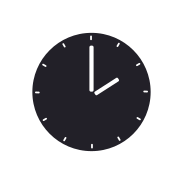
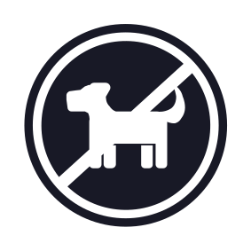
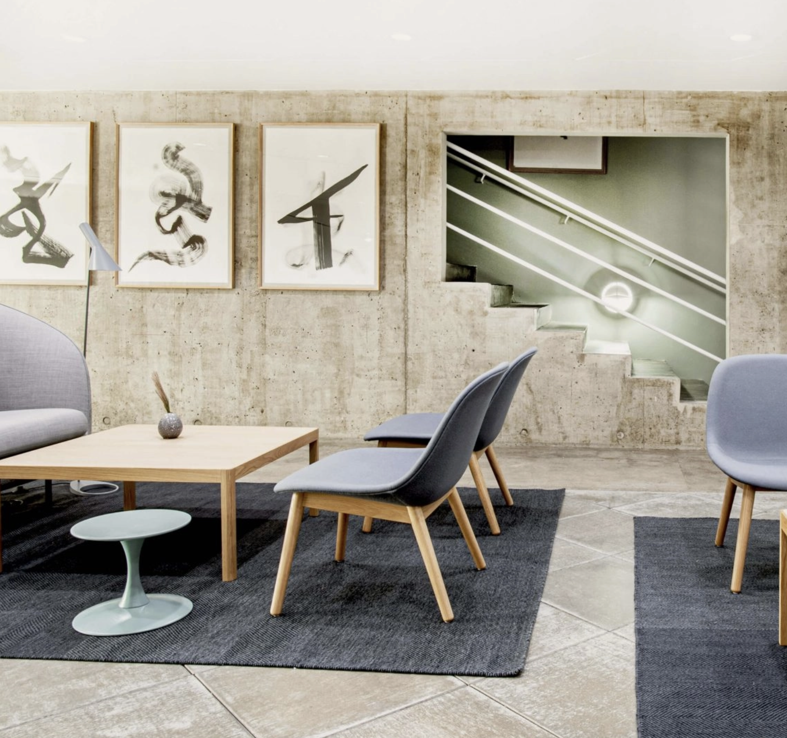
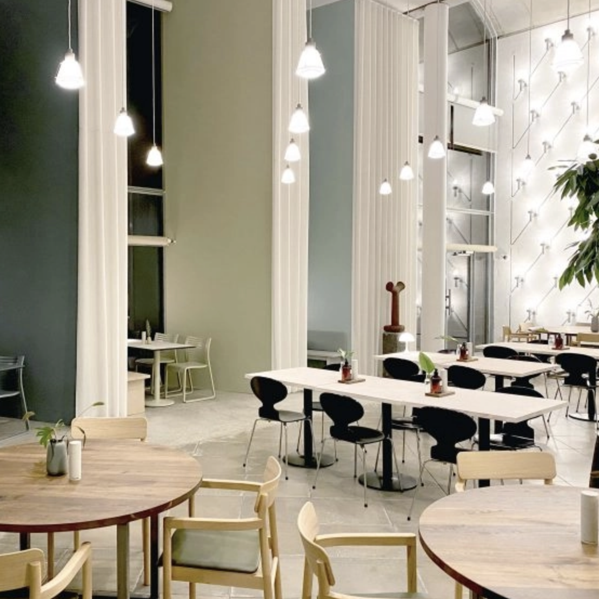
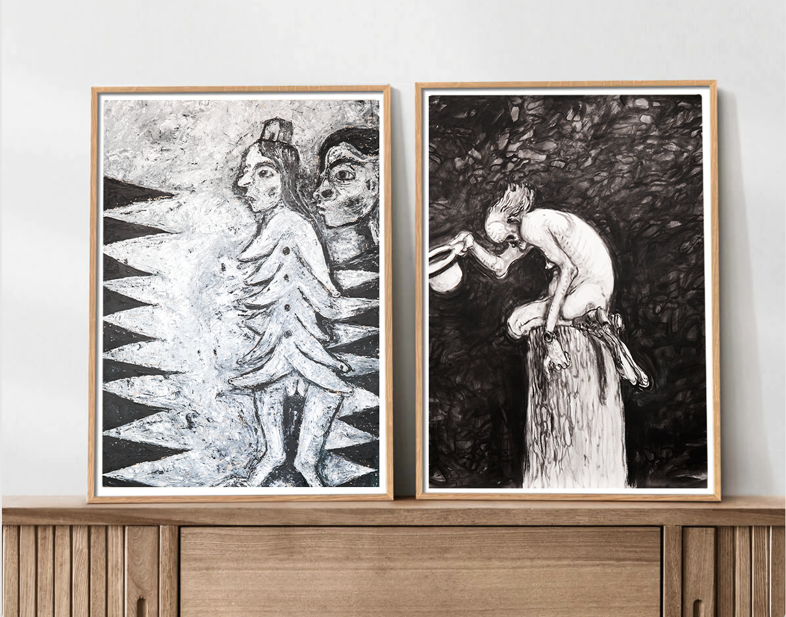

Tag motorvejen E20 mod Kolding/Varde. Følg motorvejen til du når frakørsel 62-Kolding mod rute 176 og Kolding Ø/Lufthavn Billund/Kolding/Rute 170/Havn.Tag frakørslen ind på Fynsvej/Rute 170 og fortsæt ad Lyshøj Alle til du når Æblehaven.


ÅBNINGSTIDER
Mandage: Lukket
kan være åbent ved særlige lejligheder.
Tirsdage: 10.00 - 17.00
Onsdage: 10.00 - 21.00
Torsdage: 10.00 - 17.00
Fredage: 10.00 - 17.00
Lørdage: 10.00 - 17.00
Søndage: 10.00 - 17.00
PARKERING
Der er gratis parkering på museets store p-plads lige ved hovedindgangen.
Vær venligst opmærksom på, at parkeringspladsen aflåses automatisk uden for museets åbningstid. Såfremt der skal tilkaldes en vagt til åbning af p-pladsen afkræves en afgift på 750 kr.
Vi opfordrer mobilhomes til af pladshensyn at parkere på de skrå p-pladser på Æblehaven uden for p-pladsen. Ønsker man at gå en tur i parken efter lukketid, kan man ligeledes parkere på de skrå p-pladser uden for området.
Busser må højst holde i tomgang i 1 minut af hensyn til både støj og miljø. Trapholts parkeringsplads er omfattet af reglerne for tomgang i Kolding Kommune.
MAD OG DRIKKE
Gæster er velkomne til at nyde medbragt mad og drikke ved bordene i parken. Ved henvendelse i museets indgang, kan der anvises indendørs faciliteter til spisning af medbragt mad.
Derudover har vi en dejlig café som tilbyder en række forskellige lune og kolde retter.
Det vil også være muligt at købe noget koldt eller varmt at drikke.
INTERKATION
Vores kunst er til for at blive oplevet igennem sanserne, så mange af vores udstillinger kan man interagere med kunsten ved at røre.
Derudover har vi en dejlig café som tilbyder en række forskellige lune og kolde retter.
Det vil også være muligt at købe noget koldt eller varmt at drikke.
RYGNING
Rygning er ikke tilladt indenfor på museet. Men udenfor i parken og ved indgangen er det muligt så længe, at det ikke er til gene for museets øvrige gæster.

HUNDE IKKE TILLADT
Ved fremvisning af ledsagerkort kan du have en ledsager med på dit museumsbesøg.
Det er tilladt at have service- og førerhund med på museet.
Andre hunde er ikke tilladt.
HVORDAN KOMMER MAN DERHEN?
Tag motorvejen E20 mod Kolding/Varde. Følg motorvejen til du når frakørsel 62-Kolding mod rute 176 og Kolding Ø/Lufthavn Billund/Kolding/Rute 170/Havn.Tag frakørslen ind på Fynsvej/Rute 170 og fortsæt ad Lyshøj Alle til du når Æblehaven.
Fra busterminalen tager du Flixbussen der kører til kolding på bestemte dage. Så stiger man af ved Kolding busterminal. Dernæst tager man bybus 8 "Drejens" og stig herefter af ved "Lyshøj Allé v Trapholt Kunstmuseum".
Fra togstationen tager man toget mod Aarhus H. Så stiger man af ved Kolding station. Tag bybus 8 "Drejens" og stig herefter af ved "Lyshøj Allé v Trapholt Kunstmuseum".

UDSTILLINGER
Her på Trapholt forsøger vi at tænke “ud af boksen” ved at vise kunst på en anden måde end den traditionelle.
Vi alle kender de kunstmuseer, hvor man går rundt og ser kunst hængende på væggene eller i et montre.
- Men ikke her på Trapholt!
Gå på opdagelse i kunstværkerne på en helt ny måde.
Måske er du mere til at se med hænderne? Eller måske til at bruge din hørelse? Hvad med en 3D-rejse rundt i de forskellige udstillingerne?
Det er næsten kun fantasien der kan sætte grænser for, hvad vi har gjort for at vise værkerne anderledes.
- Men ikke her på Trapholt!
Gå på opdagelse i kunstværkerne på en helt ny måde.
Måske er du mere til at se med hænderne? Eller måske til at bruge din hørelse? Hvad med en 3D-rejse rundt i de forskellige udstillingerne?
Det er næsten kun fantasien der kan sætte grænser for, hvad vi har gjort for at vise værkerne anderledes.
BØRN OG FAMILIER
På Trapholt har børnene deres helt eget sted. Her kan børn mellem 4 og 16 år male, tegne, modellere og udforske kunstneres og arkitekters arbejdsmetode og udtryk hver eneste dag.
Alle aktiviteter for børn tager udgangspunkt i museets aktuelle udstillinger og i Trapholts egen samling. Det er Trapholts kunstformidlere der står for de forskellige aktiviteter i Børnehuset.
Alle aktiviteter for børn tager udgangspunkt i museets aktuelle udstillinger og i Trapholts egen samling. Det er Trapholts kunstformidlere der står for de forskellige aktiviteter i Børnehuset.


GRUPPER OG INSTITUTIONER
VÆLG EMNE: Booker du selv kan du vælge mellem en omvisning i en udstilling, i Trapholts samling eller i museets historie, arkitektur og samling.
ANTAL: Max 25 personer.
HVORNÅR:
Mulige tidspunkter aftales ved booking via booking@trapholt.dk
VARIGHED: Ca. 45 min
ANTAL: Max 25 personer.
HVORNÅR:
Mulige tidspunkter aftales ved booking via booking@trapholt.dk
VARIGHED: Ca. 45 min
PAUSER
Alle har brug for en pause i ny og næ, og særligt når man får mange indtryk på én gang.
Heldigvis kender vi alt til pauser og nødvendigheden for det her på Trapholt. Vi har flere steder rundt i museet arrangeret siddepladser samt har vi også nogle udstillinger hvor det tilladt at sætte sig og smække benene op. Tjek bl.a. Nanna Ditzel udstillingen.
Har man brug for frisk luft så er parken rundt om museet også en oplagt mulighed.
Heldigvis kender vi alt til pauser og nødvendigheden for det her på Trapholt. Vi har flere steder rundt i museet arrangeret siddepladser samt har vi også nogle udstillinger hvor det tilladt at sætte sig og smække benene op. Tjek bl.a. Nanna Ditzel udstillingen.
Har man brug for frisk luft så er parken rundt om museet også en oplagt mulighed.


CAFE GUSTAV LIND
Oplevelsen af Trapholt fortsætter naturligt, når man træder ind i Gustav Lind, som er Trapholts egen lille gastronomiske oplevelse.
Her er der fokus på det bæredygtige, det grønne og naturligvis økologi. Menuen skifter sammen med den danske sæson, og du er altid garanteret en god spiseoplevelse.
Der er naturligvis også plads til den lille stund, hvor der kan nydes et glas vin eller hjemmebagt kage med tilhørende kaffe.
Her er der fokus på det bæredygtige, det grønne og naturligvis økologi. Menuen skifter sammen med den danske sæson, og du er altid garanteret en god spiseoplevelse.
Der er naturligvis også plads til den lille stund, hvor der kan nydes et glas vin eller hjemmebagt kage med tilhørende kaffe.
SHOPPEN
I Trapholt Designbutik sætter vi pris på det gode håndværk, det unikke og det klassiske design.
Vi fører et bredt udvalg af design fra kendte, såvel som ukendte, danske og internationale brands. Vi håndplukker vores sortiment i et mix af moderne design, kunsthåndværk og kendte klassikere.
Du finder et varieret udvalg af kunst- og designbøger, plakater, design og interiør, håndlavede smykker samt italienske skønheder i form af tasker, tørklæder og silkekjoler – og meget andet!
OBS! På vores online shop har vi et velovervejet sortiment som kan købes.
Du finder et varieret udvalg af kunst- og designbøger, plakater, design og interiør, håndlavede smykker samt italienske skønheder i form af tasker, tørklæder og silkekjoler – og meget andet!
OBS! På vores online shop har vi et velovervejet sortiment som kan købes.
